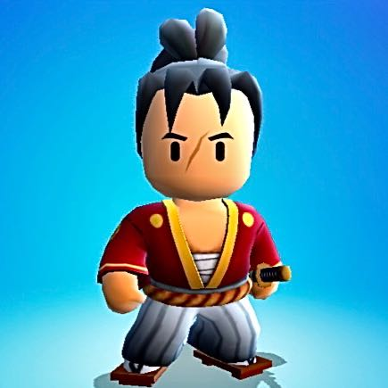

Stumble Guys
Stumble Guys é um jogo multiplayer de desafios

O jogo começa com 32 players que aos poucos vai diminuindo. Na primeira partida só 16 se qualificam, ou seja, metade

Na segunda partida só 8 se qualificam

E na última somente um se qualifica, que é o que ganha o jogo

além dessas coisas ainda tem várias skins, emotes, danças de vitória e você também consegue escolher a cor do seu personagem, você pode colocar azul, amarelo, vermelho, preto ou deixar a cor original, a cor parda.
Você também pode coletar gemas e fichas stumbles girando a roleta que a parece diariamente para você girar, na roleta você tem direito a 1 giro grátis e mais 4 assitindo vídeos.
Com as gemas você pode ganahr skins em uma roleta de skins personalizadas, e com fichas você gira outro tipo de roleta, a roleta das skins especiais que podem vir skins épicas, lendárias ou até especiais.
Você também pode jogar com seus amigos em uma sala personalizada que tem um código que só você e quem mais estiver na sala com você. Resumindo o jogo é muito bom, um jogo multiplayer que usa desafios para te divertir.